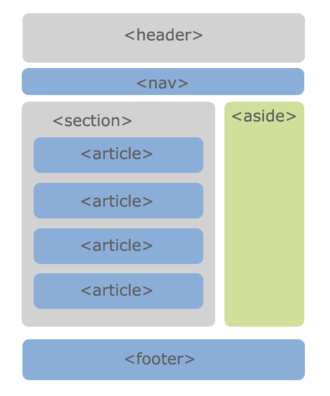

История развития вёрстки веб-страниц
Тим Бернерс-Ли, работая в Европейском институте физики частиц придумал язык, который концентрировался не на средствах оформления, а на логике разметки текста. Некоторое время страницы оформлялись в так называемом «академическом дизайне», например, lib.ru[3].
С появлением браузера Netscape ситуация изменилась. Разработчики браузера внедряли нестандартные для HTML теги, призванные улучшить внешний вид документа[3]. Браузер был настолько распространённым, что нестандартные теги не вызывали беспокойств: нет смысла беспокоиться о том, что другие браузеры не поддерживают эти теги, когда только 10% посетителей пользуется другими браузерами[3]. Сайты перестали разрабатываться в «академическом» стиле[3]. Над дизайном стали задумываться, а значит, потребовалась более сложная вёрстка[3].
С середины 1990-х MS Internet Explorer захватывал всё большую часть потребителей[3]. Подходы разработчиков браузеров различались, отличался и набор поддерживаемых технологий[3]. Всё это лишь добавляло неудобств для разработчиков сайтов, увеличивая время разработки сайта[3].
Во время борьбы за рынок на смену устаревающим и плохо поддерживающим стандарты Netscape 4 и Internet Explorer 4 (IE 4) пришли пятые версии браузеров[4]. IE 5 должна была не просто исправить ошибки предшественника, а улучшить поддержку стандартов CSS[4]. На этот шаг Microsoft была обречена хотя бы потому, что вошла в группу W3C[4]. В процессе разработки разница в отображении сайтов стала настолько значительной (а часть сайтов вовсе не работала), что разработчикам пришлось создать специальный «режим совместимости»[4]. В таком режиме браузер работал «по старинке»[4]. Для того, чтобы использовать режим поддержки стандартов, необходимо было в html-код добавить элемент DOCTYPE[4]. Идея с режимом совместимости позднее перешла в остальные браузеры (например, Mozilla, Safari, Opera и т.д.)[4]. С развитием технологий разновидностей doctype оказалось слишком много, только к пятой версии html W3C предложили использовать короткую запись, унифицировав стандарт[4].
Через некоторое время работать блоками стало слишком неудобно, так как поддержки CSS у браузеров фактически не было, приходилось вставлять стили прямо в блоки, что усложняло разработку[3]. В это время для разработки стали применяться таблицы с невидимой границей, где многие стили не требовались, они были по умолчанию[3].
В 1998 году появляется спецификация Cascading Style Sheets Level 2 (CSS2), а потом и CSS2.1, что позволило выносить код оформления блоков в отдельные файлы и использовать на всех страницах сайта и даже кэшировать этот файл, а значит, ускорять загрузку страниц[3]. Развитие этой технологии и поддержка со стороны браузеров привела к использованию блочной вёрстки вместо таблиц[3].
Этапы верстки
Как правило, верстальщик получает от дизайнера утверждённый дизайн-макет страницы[2]. Далее верстальщик анализирует полученный макет[2]. Разбивает его на горизонтальные линии (полосы) – «этажи». Далее каждый «этаж» анализируется отдельно и разбивается на прямоугольные блоки – колонки.
Далее происходит рекурсивный процесс вёрстки этих отдельных строк, а в них – столбцов[2].
После вёрстки страница проверяется на кросс-платформенность. В общем случае можно отвечать на следующие вопросы[2]:
- Одинаково ли отображается страница в браузерах и на разных операционных системах?
- Происходит ли критичное смещение блоков, если изменять размер шрифта в настройках браузера в меньшую и большую сторону?
- Происходит ли критичный сдвиг блоков, если отключить показ изображений в браузере?
- Оказывает ли существенное влияние на целостность страницы разрешение монитора?
Критические исправления вносятся в документ, и проверка повторяется с самого начала[2].
Ограничения
Одним из важных ограничений являются шрифты[2]. Гарнитурные наборы у всех операционных систем отличаются. Выбор гарнитуры не ограничен ничем, но не найдя указанного набора браузер, использует настройки по умолчанию[2].
Многообразие форматов
Распространение веба тотально. На момент 2010 года веб-ресурс может быть открыт на любом мониторе от телевизора с предустановленным браузером до мобильного телефона. Возможности по отображению цветов на всех устройствах также различаются. Однако, основным вопросом в верстке является — отображение при различной ширине рабочего пространства[6].
Верстка отличается различными подходами к этому вопросу[6]:
- Фиксированная ширина — сайт отображается с одинаковой шириной вне зависимости от ширины окна браузера. Соответственно, на широкоформатных браузерах такие сайты имеют большие поля по краям, а на мелких экранах смартфонов показывают горизонтальную прокрутку.
- «Резиновая» ширина — полосы сайта растягиваются на весь экран, занимая место пропорционально настройкам верстальщика.
Исторически сложилось, что сайт — вертикальный формат, который занимает не более чем ширину экрана, чтобы избежать горизонтальной прокрутки[6]. Все возможности по управлению положения сайта (клавиатурные комбинации и полоса прокрутки и колесо мыши) настроены непосредственно на вертикальное передвижение[6].
Модульность и виды подходов к вёрстке
Ни один из способов не является каноничным и принятым как основной[2]. Все подходы к верстке имеют как преимущества, так и недостатки. Верстальщик, как специалист, сам выбирает какие инструменты использовать, основываясь на взвешивании достоинств и недостатков для конкретного проекта[7].
Модульная сетка структурно разбивает материал на отдельные блоки, для упрощения добавления новых элементов на страницу[7]. Некоторые верстальщики могут уйти от правил верстки, ради определённого проекта, но необходимость простого добавления вновь появляющихся элементов на странице обострит необходимость возврата к этим правилам[7].
Модульная сетка — набор направляющих, которые выравниваются относительно друг друга и делят собой макет на квадраты[7]. Позволяют, таким образом, независимо от остальной части сайта изменять единицу информации[7].
Основными инструментами для вёрстки являются фреймы, таблицы и div. В стандарте HTML5 фреймы больше не поддерживаются[8], а для работы стали доступны «семантические» блоки: header, main, nav, section, article, aside, footer. Однако блоки не дают определённых преимуществ, а являются лишь «синтаксическим сахаром».
Табличный подход
Таблицы являются удобным инструментом для выравнивания блоков. В html таблица делится на строки, которые в свою очередь делятся на ячейки, таким образом можно создавать неограниченное количество строк с неограниченным числом ячеек в каждой. Ячейки таблицы имеют особые настройки выравнивания, которые не встречаются более в других элементах. Это значит, что некоторые элементы дизайна крайне сложно сверстать без использования таблиц[9].
В деловом мире таблицы используется для сравнения данных, а также для наглядности[9].
Недостатком табличного подхода является то, что страница не будет отображена до тех пор, пока не будет загружен закрывающий тег таблицы, что является критичным при обрыве связи и медленном соединении. Также к недостаткам можно отнести избыток кода, усложняющий его понимание.
На момент 2011 года табличная верстка считается устаревшей[9].
Вёрстка фреймами
Вёрстка фреймами — верстка с помощью одноимённого тега frame, который имеет иной способ позиционирования, а внутри себя включает отдельные html-страницы[11].
Фреймы просты в применении, поскольку необходимо заботиться только об отображении и перерисовке части окна браузера — одного фрейма, — остальные части находятся в другом фрейме и не перерисовываются без взаимодействия с ними[11]. Также возможно открытие ссылки в другом фрейме, что удобно при использовании главного меню в отдельном фрейме[11]. Страницы поделённые на фреймы имеют меньше кода, вследствие отсутствия повторяемых частей, которые не перезагружаются[11]. Они размещаются точно в нужном месте окна браузера[11].
Фреймы плохо индексируются поисковыми системами, поскольку на страницах с содержимым нет ссылок на другие страницы сайта и наоборот, в навигационной странице нет никакого содержимого[11]. Переход из поисковой страницы происходит на одну страницу, без загрузки других фреймов — навигации и логотипа[11]. Внутренние страницы нельзя добавить в закладки, потому что браузер не показывает изменения в адресной строке, отображая всегда только адрес сайта[11]. Совместимость между браузерами противоречива[11]. Одни и те же параметры интерпретируются браузерами всегда по-своему[11].
Адаптивная
Адаптивная вёрстка/тип макета — дизайн, который подстраивается (адаптируется) под размер экрана, в том числе может происходить перестройка блоков с одного места на другое, или их замена блоками отображаемыми только при определённом разрешении. Адаптивная вёрстка пришла на смену идеи создания специальных мобильных версий сайта, «живущих» на отдельных поддоменах (например, m.wikipedia.org).
Преимущества:
- Сайт будет отображаться при разных размерах экрана так, как это наиболее удобно пользователю;
Недостатки:
- Требует тщательной проработки нескольких макетов, для различных размеров экранов.
То есть у каждого вида дизайна есть свои минусы и плюсы и выбор зависит от решаемой задачи. При этом может использоваться и смешанный дизайн — некоторые столбцы табличного дизайна задать в процентах, а другие в пикселях.
Валидность HTML-верстки
Валидность HTML-верстки — это её соответствие стандартам организации The World Wide Web Consortium (W3C). Отсутствие ошибок в вёрстке документа — один из основных показателей качества вёрстки. Автоматическая проверка вёрстки на ошибки может быть проведена как с помощью онлайн сервиса W3C, так и различными программами «валидаторами». Разные версии спецификации HTML предполагают различный синтаксис, поэтому тест верстки на валидность должен обязательно учитывать её Document Type.
Кроссбраузерность
Кроссбраузерность сайта — близкое к исходному дизайнерскому и функциональному виду отображение параметров страниц при использовании разных браузеров и их различных версий и модификаций.
Веб-разработчики принимают всевозможные усилия по унификации гипертекстовой разметки, направленные на разработку единого стандарта отображения в браузерах, но реализация этого — сложный технологический процесс из-за ряда конфронтаций среди разработчиков.